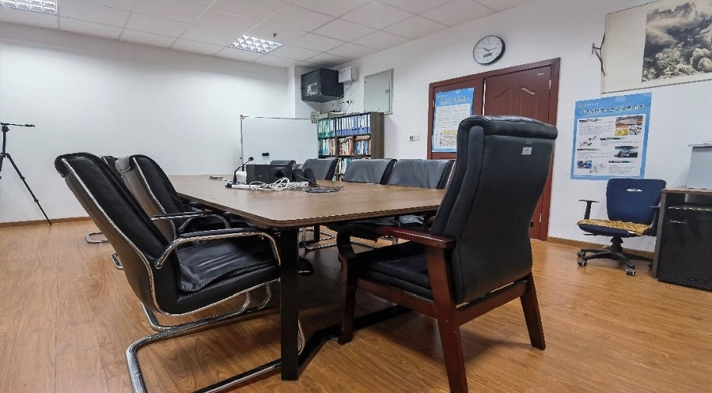
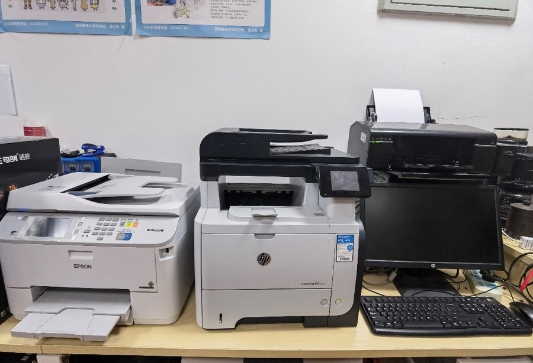

正相信经过研究生初试的你们都听过这么些话，“研究生就像围城，外面的人想进来，里面的人想出去”,“研究生只有拿到录取通知书和拿到毕业证书的时候是快乐的”。或许正在紧张准备研究生复试的你们只能撇撇嘴说，“这不妥妥的凡尔赛吗，我如果上岸，导师叫我干啥都行”。诚然，可能大部分考研的人都或多或少都有这个想法，但我想说，只有真正经历过研究生生活的同学才可能体会这些话吧。
选择考研，大家也就下定了决心进入这个“围城”，“围城”的围墙已立，我们能选择的只有在围墙里找一些在枯燥的研究生生活里增添一些不一样色彩的事物吧。选择心仪的实验团队、选择和蔼的硕士导师、遇见热心的师兄师姐、碰见志同道合的同门、工作在舒适的实验室环境带给大家的是不一样的研究生生活。

在通软实验室，国家级、省部级科研项目能充分释放大家的才华，嵌入式系统开发、智能图像处理、信息化工程项目监理、无人机网络通信总有适合大家的地方。舒适的工作室环境、完善的硬件条件也为大家的科研生活提供了强有力的保障，作为全校不多的为研一同学提供独立工位的实验团队，也极大方便了小伙伴间的及时交流学习问题、分享项目经验。

当然，实验室充足的生活配套也是必不可少的。打印机、饮水机肯定不能缺席，咖啡机、冰箱也能满足大家别致的生活请求，甚至，实验室配套的小轿车也能为大部分拿到驾照后从未摸到车的小伙伴锻炼开车技术，早日变成“老司机”。


最后，实验室热情的师兄师姐、志同道合的同门伙伴才是研究生的快乐源泉。实验室特有的暑期团建拉进了同门之间的关系，实验室不变的迎新宴拉进了与师兄师姐的关系，在枯燥的研究生生活里，有一群意气相投的小伙伴才是我倍感珍惜的财富！相信这也是大家选择团队的第一要素吧。
欢迎大家加入通软实验室，欢迎大家在通软实验室完成你们三年的逐梦旅程！